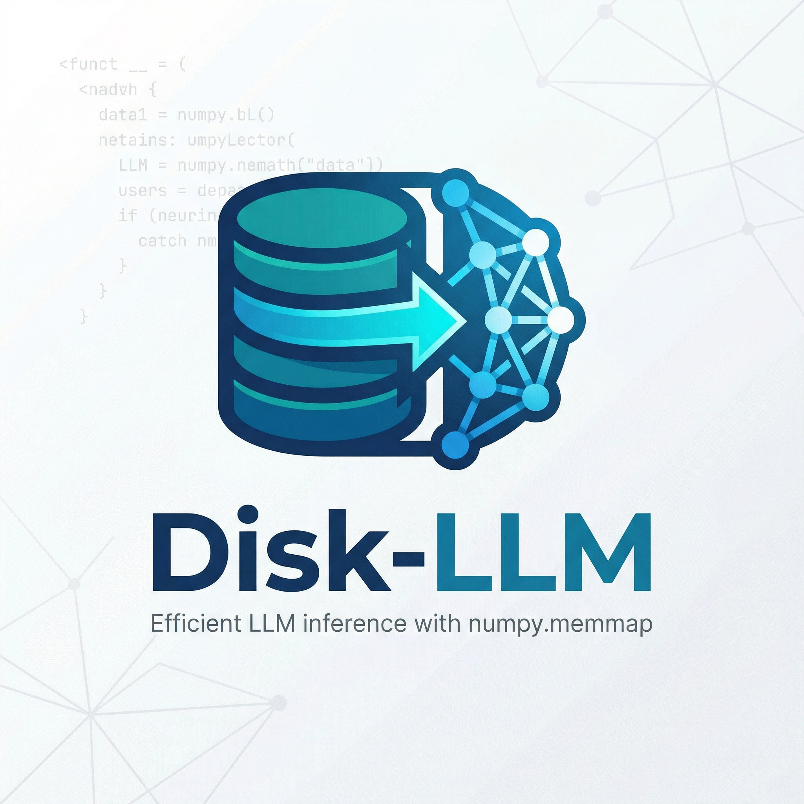

Disk-LLM makes local inference inspectable.
Convert checkpoints into layer-packed shards, run short text-only experiments on CPU, and watch the runtime surface the parts that usually stay hidden: tensor layout, logical bytes mapped, and per-layer latency.

Know the checkpoint before you touch the runtime.
The source inspector parses safetensors headers directly, counts tensors, estimates memory, and previews which parts of a multimodal checkpoint belong to the text path.
Layer-oriented shards
Disk-LLM rewrites selected tensors into memmap-friendly shards instead of treating the raw source layout as final.
Short CPU loops
The v1 runtime is intentionally narrow: batch size 1, short prompts, and honest visibility into what the adapter is doing.
Telemetry first
Every run can expose first-token latency, tokens per second, tensors touched, and layer timing without pretending to be a production engine.
From source snapshot to generated tokens.
The CLI keeps the whole workflow compact and reproducible.
disk-llm inspect --source-dir /path/to/Qwen3.5-9B
disk-llm convert /path/to/Qwen3.5-9B ./packed-qwen35
disk-llm inspect --manifest ./packed-qwen35/manifest.json
disk-llm generate ./packed-qwen35/manifest.json --prompt-ids 1,2,3